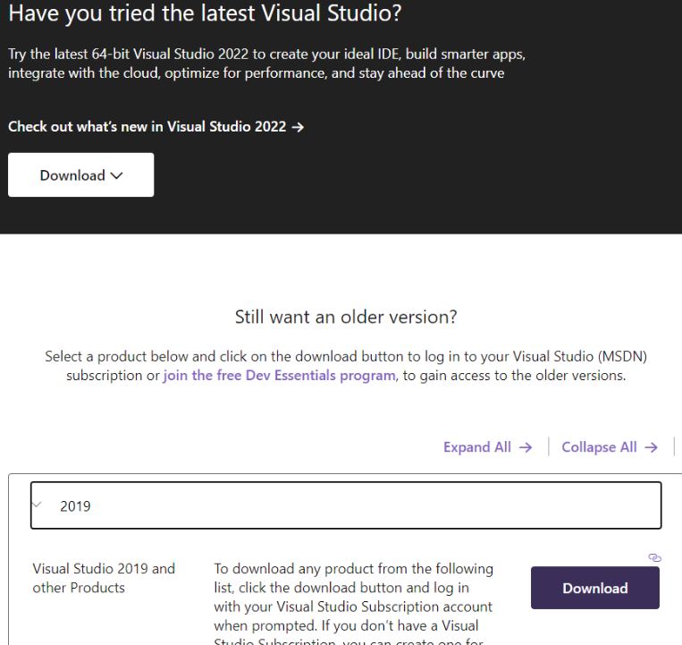
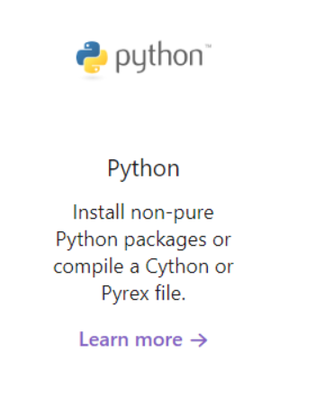
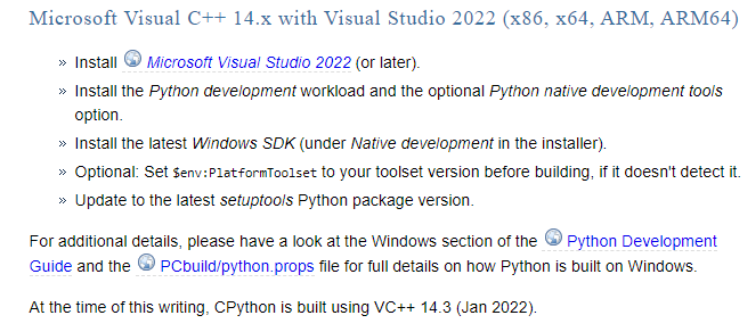
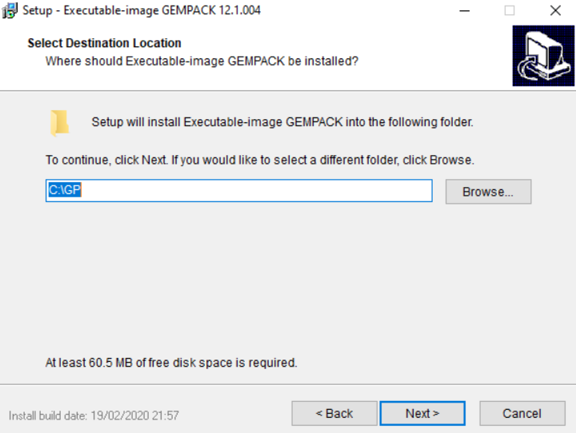
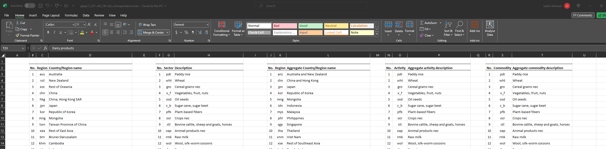
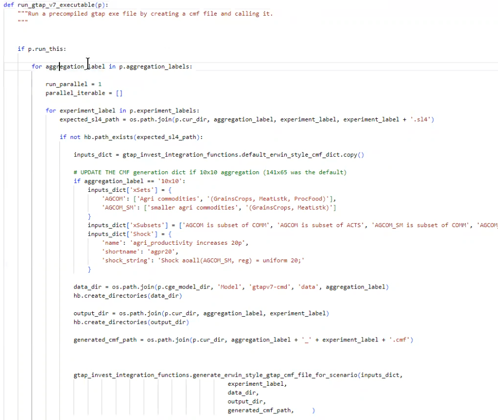

GTAPPy
Installation
Cython Installation





Run-GTAP installation simple for class
Step 1:
Install RunGTAP at https://www.gtap.agecon.purdue.edu/products/rungtap/default.asp
At https://www.copsmodels.com/gpeidl.htm download: https://www.copsmodels.com/ftp/ei12dl/gpei-12.1.004-install.exe
- OR FOR VERSION 12: https://www.copsmodels.com/ftp/ei12dl/gpei-12.0.004-install.exe
Install to default location

Proceed without selecting a license (to start the 6 month trial).
Step 2: Install GTAPAgg2: https://www.gtap.agecon.purdue.edu/private/secured.asp?Sec_ID=1055
TO PROCEED, YOU NEED TO HAVE A ACCESS TO THE GTAP DATABASE. OR YOU CAN ACCESS IT THROUGH ee_internal DATABASE.
Step 2.1: - Extract the .lic file from https://www.gtap.agecon.purdue.edu/databases/download.asp step 2. Put this in GTAPAgg2 dir
Step 2.2: - Install the GTAP Database itself from at : https://www.gtap.agecon.purdue.edu/databases/download.asp
- Make sure to also get the AEZ version, which will also give a full pkg file.

Put this
.pkgfile inGTPAg2dir.Launch GTPAg2, identify pkg file for both default and AEZ data
When running aggregations, make sure to choose the right product:

Step 2.3: Running the unaggregated version - Open GTPAg2.exe

Use this to aggregate a 1-1 version.
Create a 1-1 mapping
View change regional aggregation, sector aggregation, setting to 1:1
For factor aggregation, it defaults to 8-5, can set this to 8:8.
Read aggregation scheme from file, loa default.agg is 10 by 10
For factors, if using AEZ, there is land specified by each AEZ. Erwin is working to fix this. Because didn’t have it ready, went back to standard GTAP package of data.
Used full 8 factors, make new things “mobile factors”.
- Save aggregation scheme to file to AggStore

Save aggregation scheme to file to AggStore

This could also be done by making the .agg file via text editing.
- Then finally Create aggregated database in GTAPAgg

Note that this creates two versions of the database, one for GTAP code v6.2, one for v7.0. The 7.0 is in a sub zip folder gtapv7.zip. This is the one we want.
C:\\GTPAg2\\AggStore\\GTAP10A_GTAP_2014_65x141\\gtapv7
Getting the v7 code
Extract from RunGTAP (lol)
Under Version, Change, set to
NCORS3x3Under Version, New, use wizard using same aggregation and simply copying.

This will create a new folder in c:/runGTAP375 named v7all.
Now we will replace the data files in v7all with the fully disaggregated database (in the v7 dir) we created above.
Notice also in the v7dir we have shock files, e.g.
tinc.shk.By default, these will be inherited from the old 3x3 version.
Under Tools, Run Test Simulation. This will rewrite new shk files to match aggregation.
- ALSO NOTE, this is the full run that tested it all worked.
To check that it worked, go to results, macros.
Or, could open results in
ViewSOL. Use View -> Results Using ViewSOLViewSOLhas the full results, whereas RunGTAP only has a subset by the limited mapping specific toRunGTAP.ViewSOLloads the wholesl4file.Here you could go to e.g.
pgdpto see that prices all went up by 10%, which is the default shock i guess?
OR, from
ViewSOLFile, can open inViewHAR, which gives even more power, such as dimensional sorting.
Now we can run a non-trivial shock. So for global ag productivity shock, let’s increase productivity.
In
RunGTAP, go to viewRunCMFSTARTfile. Here we will define a new set for the new experiments. (CMFSTARTfiles sets settings for runtime, but also which are the files that should be called, along with sets for the closure).To do this, go to
RunGTAP-\>View-\>Sets, enable advanced editing,Sets-\>View Set LibraryHere click on
COMM, copy elements intabloformat. This will get the set definition intabloformat of ALL the commodities. From this you can pare down to which you want to shock,For the moment, we will create two sets, one for ag commodities (
ag_comm), and one for a smaller subset of agg commodities (ag_comm_sm).And will also define what is the complementary set (
xag_comm_sm) ofag_comm_sm.

Now that the sets are defined, can use them in defining the SHOCKS

Set the solution method to
gragg 2-4-6Save experiment.
Then Solve!
- Comment from TOM: If Gragg doesn’t work, use Euler with many steps 20-50
From second call with Erwin on cmd and rungtap versions
Note that now we have a tax, we do it on both domestic and imported, then write a new equation that makes them sum up:
- E_tpm (all, c, COMM)(all, r, REG) tmp(c, r) = tpmall + tpreg + tpall
Note that we now set the rate% of beef tax to increase 50%. Before we were increasing it by a 50% POWER OF THE tariff.
First run testsim.bat.
Then run the simulations.
In rungtapv7.bat then,
Simresults.bat last. Takes the sl4 files and converts it into a har file (.sol), and then combines them into 1 file, then splits to CSV.
RMAC is full dimension, RMCA is aggregated by chosen aggregation simplification.
- AggMap.har defines the aggregation.
Them Allres.CMF is run, which actually does the aggregation.
- Allres.cmf calls to allres.tab, which cleans the results. This would need to have new scenarios added to the top
Allres.EXP also needs to be updated, along with the scenario EXP files to h
ave thecorrect exogenous variables, such as tpdall
alternatively just specify they use hb.get_path() to the private database.
Iterating over multiple aggregations
GTAPPY runs for multiple aggregations and follows the philosophy that for a well-built model, the results will be intuitively similar for different aggregations and thus it serves as a decent check. This is similar to “leave-one-out” testing in regression.
Release notes
v2023-12-18
We need to clarify how we go from a erwin-style mapping xlsx to EE spec. Below is what it looks like as downloaded from erwin.
GTAP-ctry2reg [source from erwin converted to EE spec].xlsx

Manually renamed to gtapv7_r251_r160_correspondence.xlsx (must be excel cause multi workbook). Also need to put the legend information somewhere else in a well-thought-out place (not attached to regions correspondnce)
Note that eg No. is used twice where the first is r160 and the second is r251. New input mapping should clarify
Similar for sectors

First note, the word “sector” is specific to the case when you aren’t specifying if you’re talking about COMM (commodities) or ACTS (activities) because I’m not quite sure of the differentiation at this point.
Notes from Erwin on GTAPPY
v2023-12-15
Issues resolved:
In the release’s Data folder, the aggregation label gtapaez11-50 should be renamed v11-s26-r50, correct?
Also note that I have decided to have the most recent release always have NO timestamp whereas dated versions of same-named models/aggregations should add on the timestamp of when they were first released
Propose changing the names of the cmf files from cwon_bau.cmf to gtapv7-aez-rd_bau.cmf and cwon_bau-es.cmf to gtapv7-aez-rd_bau-es (note difference between hyphens (which imply same-variable) and underscores, which are used to split into list.)
Propose not using set PROJ=cwon in the CMF as that is defined by the projectflow object.
propose changing SIMRUN to just ‘experiment_name’ ie “bau” rather than “projname” + “bau”
Reorganize this so that data is in the base_data_dir and the output is separated from the code release” set MODd=..set CMFd=.
set SOLd=..set DATd=..%AGG%
THESE TWO STAY OUTSIDE THE RELEASE
This basic idea now is that there is a release that someone downloads, and they could run it either by calling the bat file or by calling the python run script. This means i’m trying to make the two different file types as similar as possible. However, note that the bat file is only going to be able to replicate a rd run without ES, so technically the python script can contain a bat file but not vice versa.
Renamce command line cmf options as tehy’re referenced in the cmf file: # CMF: experiment_label # Rename BUT I understand this one might not be changeable because it appears to be defined by the filename of the CMF? # p1: gtap_base_data_dir # p2: starting_data_file_path # Rename points to the correct starting har # p3: output_dir # Rename # p4: starting_year # Rename # p5: ending_year # Rename
Simple question: Is there any way to read the raw GEMPACK output to get a sense of how close to complete you are? I would like to make an approximate progress bar.
When you say “automatic accuracy”, you can.
+++> Beginning subinterval number 4.
—> Beginning pass number 1 of 2-pass calculation, subinterval 4.
Beginning pass number 6 of 6-pass calculation, subinterval 6
- Would it be possible to not put a Y in front of years like Y2018? This can mess up string->int conversions.
keep Y, gempack can’t have non-numeric characters at the start of a var
- There is no bau-SUM_Y2050 (but ther is for VOL and WEL). Is this intentional?
NO! SUM describes the starting database.
Welfare not possibly in RD because no discount rate eg
- Question: Is EVERYTHING stored in the SL4? I.e., are the other files redundant?
No, apparently things like the converting the sl4 to volume terms is not stored in the sl4, so that needs to come in on sltht or in ViewSOL
v2023-11-01
Shocks implemented
- Different population file replacements
- GDP change
- Yield changes?
Example run file

At the top we create the project flow object. We will add tasks to this.
Example executable call

Harder part to do is figuring out how to have the shocks work
Need to create xSets, xSubsets, Shock. Could use READFROMFILE command in tablo cmf.
What are the different kinds of shocks
Uniform Shockaoall(AGCOM_SM, reg) = uniform 20;
Another more
aoall(ACTS, REG) = file select from file pointing to a list of all regions. 0 is no shock.
Everything in the exogenous list can be shocks.
Also can SWAP an initially endogenous with exogenous.
E.g. swap aoreg with GDP
What about changing an elasticity?
those are in gtapparm, so write a new .prm (this is not a shock but is just replacing an input.)
Notice that there are shocks vs data updates.
The elasticities are being calibrated??? if you change the basedata to basedata2, then a different default2.prm, with no shock, the model will replicate the initial database.
If it’s a supply response elasticity (as in PNAS) that WILL affect it (unlike above).
needs to be percentage change over default POP. In base data. Read this in and process it against Eric’s file.
Shock pop(REG) = SELECT FROM FILE filename header 4ltr header. Swap QGDP aoreg shock aoall (agcom_sm, reg) = select from yield file.